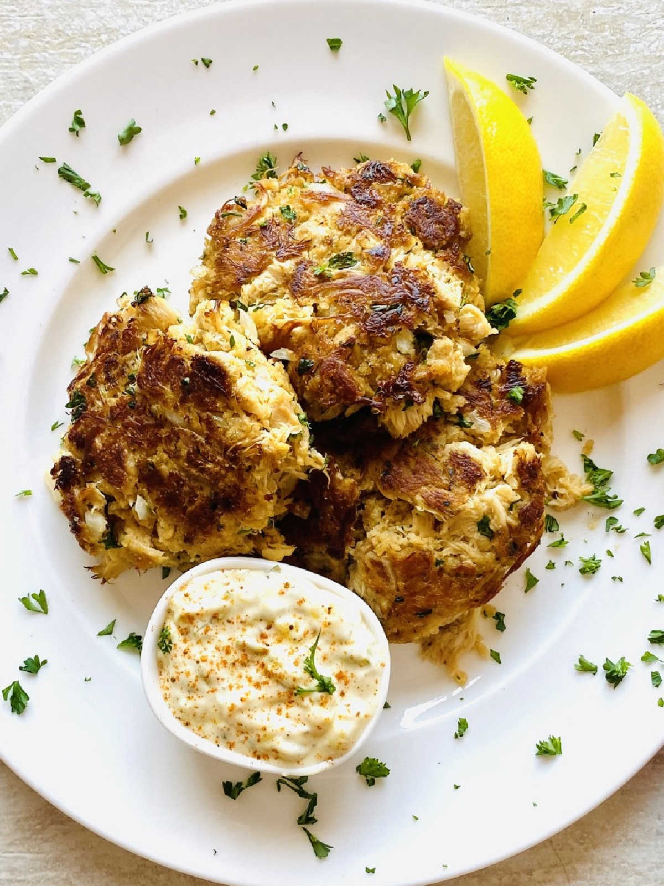

Lion's Mane Crab Cakes

Ingredients
- Lion's Mane mushrooms
- Egg
- Panko
- Onion
- Worcestershire sauce
- Mayonnaise
- Dijon Mustard
- Old Bay Seasoning
- Some other spice you can't find
Steps
- Shred the mushrooms.
- In a large bowl, mix all ingredients until fully incorporated.
- Make patties.
- Cook the patties for 3 minutes on each side.